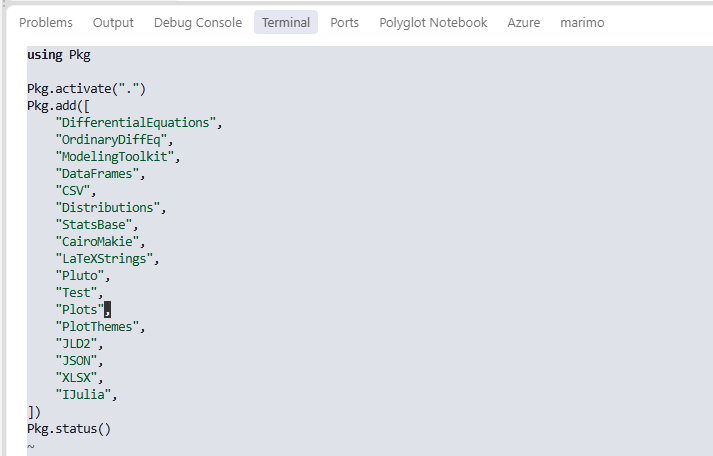
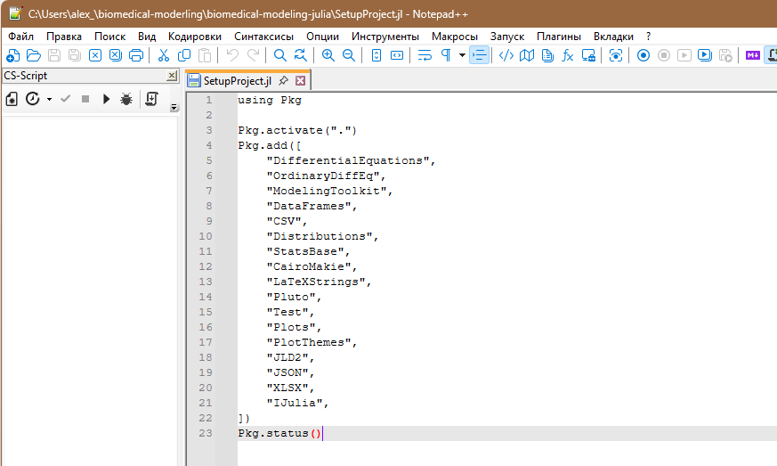

println(2+2)4Математическое моделирование — это один из методов научного познания, при котором реальный объект, процесс или явление (моделируемый объект) заменяется их упрощённым представлением в виде системы математических выражений (уравнений, неравенств, алгоритмов), отражающих ключевые свойства, взаимосвязи и динамику изучаемой системы (моделью). Часто модель носит междисциплинарный характер, однако также часто модель относится к определенной предметной области. Вот пример известной модели перехода массы в энергию.
\[E=mc^2\]
В биологии и медицине модель описывает физиологические, биохимические, анатомические или эпидемиологические процессы с помощью количественных переменных (концентрации, давления, потоки, численности клеток, вероятности событий) и параметров, имеющих биомедицинскую интерпретацию (скорости реакций, коэффициенты диффузии, периоды полувыведения, коэффициенты передачи инфекции).
Важно понимать, что модель не претендует на полное воспроизведение реальности по двум причинам: она строится на определенных явно сформулированных допущениях (однородность ткани, пренебрежение отдельными регуляторными контурами, усреднение по популяции) и предназначена для решения лишь ограниченногокласса задач — объяснения механизмов, прогноза исходов, оптимизации вмешательств или проверки гипотез.
Для медиков математическое моделирование служит инструментом перехода от качественных описаний к количественному, проверяемому анализу клинических и исследовательских задач. Основные направления применения включают:
Диагностику и прогноз. Модели позволяют формализовать динамику заболевания, оценивать влияние терапевтических вмешательств и прогнозировать индивидуальные исходы (риск осложнений, ответ на терапию, выживаемость).
Понимание механизмов болезни. С помощью моделей расшифровывают структуру регуляторных систем, оценивают роль отдельных механизмов (например, иммунного ответа, гормональной обратной связи, гемодинамики) и проверяют гипотезы о патогенезе.
Оптимизацию лечения. Персонализированные модели используются для подбора доз препаратов, режимов введения, схем комбинированной терапии, планирования хирургических вмешательств и реабилитации.
Эпидемиологию и общественное здоровье. Модели распространения инфекций (SIR, SEIR и их расширения) применяются для прогноза заболеваемости, оценки эффективности карантина, вакцинации и других мер контроля.
Фармакологию и разработку лекарств. Фармакокинетические и фармакодинамические модели описывают всасывание, распределение, метаболизм, выведение препаратов и их действие на целевые системы, что сокращает объём доклинических и клинических испытаний.
Организацию медицинской помощи. Методы оптимизации и теории очередей используются для распределения ресурсов (койки, оборудование, персонал), снижения времени ожидания и планирования расписаний.
Таким образом, моделирование становится частью доказательной и персонифицированной медицины, позволяя врачу и исследователю работать с количественными сценариями вместо интуитивных предположений.
Для работы с биомедицинскими моделями достаточно базового, но системного набора математических дисциплин. В рамках данного пособия мы последовательно вводим необходимый минимум в контексте конкретных задач. По ходу изложения мы обсудим (безусловно, на базовом уровне):
Дифференциальное и интегральное исчисление. Понимание производной как скорости изменения, интеграла как накопленной величины, навыков работы с элементарными функциями необходимо для формулировки и анализа динамических моделей (рост популяций, изменение концентраций, динамика эпидемий).
Обыкновенные дифференциальные уравнения (ОДУ). Большинство рассмотренных моделей (экспоненциальный и логистический рост, SIR/SEIR, фармакокинетика, модели опухоли, глюкоза–инсулин) формулируются в виде систем ОДУ первого порядка. По ходу изложения вы получите базовое понимание таких понятий как: решение, начальные условия, устойчивость, фазовые траектории.
Элементы линейной алгебры. Векторы состояний, матрицы параметров, собственные числа и собственные векторы возникают при анализе устойчивости стационарных состояний и при работе с многокамерными моделями.
Теория вероятностей и математическая статистика. Для стохастических моделей рождения–гибели, оценки параметров по экспериментальным данным, построения доверительных интервалов и проверки гипотез необходимы базовые понятия распределений, случайных величин, оценок параметров и статистических тестов.
Численные методы. Поскольку аналитические решения доступны лишь для простейших моделей, важно понимать идеи численного интегрирования ОДУ (методы Эйлера, Рунге–Кутты), дискретизации, оценки погрешности и устойчивости схем.
В пособии эти разделы математики вводятся не абстрактно, а в привязке к конкретным биомедицинским задачам: каждый новый математический объект сразу получает физиологическую или клиническую интерпретацию.
Современное математическое моделирование в биологии и медицине опирается на комбинацию математических пакетов, языков программирования и специализированных платформ. Основные группы средств:
Универсальные языки программирования. Python, R, Julia, MATLAB/Octave, C++ и другие позволяют реализовывать модели «с нуля», гибко настраивать численные схемы и интегрировать модели в более крупные программные комплексы.
Специализированные математические пакеты. MATLAB/Simulink, Mathematica, Maple, GNU Octave предоставляют встроенные решатели ОДУ, средства символьных преобразований, оптимизации и визуализации, что удобно для прототипирования и обучения.
Биоинформатические и биомедицинские платформы. COPASI, SBML-совместимые среды, CellML-инструменты, специализированные пакеты для системной биологии и физиологического моделирования ориентированы на работу с биохимическими сетями, сигнальными путями и многоуровневыми моделями.
Статистические среды. R, Python (scipy, statsmodels), Stata, SAS используются для статистического анализа данных, оценки параметров моделей, проверки гипотез и построения регрессионных и смешанных моделей.nsportal+1
Средства визуализации и отчётности. Jupyter-ноутбуки, R Markdown, Quarto, LaTeX позволяют объединять код, расчёты, графики и текст в воспроизводимые документы и учебные материалы.scienceforum
Выбор конкретного инструмента зависит от задачи (обучение, исследование, клиническое приложение), уровня подготовки пользователя, требований к производительности и воспроизводимости, а также от доступной инфраструктуры.
В данном пособии в качестве основного инструмента выбран язык программирования Julia. Это решение обусловлено сочетанием требований учебной задачи, научных расчётов и долгосрочной воспроизводимости проектов.
Высокая производительность при удобстве высокого уровня. Julia компилируется «на лету» (JIT-компиляция) и обеспечивает скорость, близкую к C/Fortran, при синтаксисе, сопоставимом по удобству с Python или MATLAB. Это позволяет студентам и исследователям писать понятный код без потери эффективности при работе с большими моделями и длительными вычислительными экспериментами.
Вот простая ячейка с расчетом в Julia:
println и мы видим ответ 4.println(2+2)4Еще один пример, более сложный. Все, что начинается с символа # - это комментарии, которые поясняют нам, читателям, что делает определенная часть кода. Для понимания остальной части кода следует объяснить, что Julia - это экосистема. Она включает как сам более-менее универсальный язык, так и множество пакетов (иногда их также называют модулями или библиотеками) которые решают более узкие задачи. В частности, строки ниже подключают менеджер пакетов (using Pkg), а этот менеджер выводит список пакетов текущего проекта на экран командой Pkg.status().
# Выведет точный путь к используемому файлу Project.toml
println("Активный Project.toml: ", Base.active_project())
# Выведет информацию об окружении и активных пакетах
using Pkg
Pkg.status()Активный Project.toml: C:\Users\alex_\biomedical-moderling\biomedical-modeling-julia\Project.toml Status `C:\Users\alex_\biomedical-moderling\biomedical-modeling-julia\Project.toml` [336ed68f] CSV v1.1.0 [13f3f980] CairoMakie v0.15.15 [a93c6f00] DataFrames v1.8.2 [0c46a032] DifferentialEquations v8.1.1 [31c24e10] Distributions v0.25.131 [7073ff75] IJulia v1.34.4 [033835bb] JLD2 v0.6.7 ⌃ [682c06a0] JSON v1.9.0 [b964fa9f] LaTeXStrings v1.4.1 ⌃ [961ee093] ModelingToolkit v11.45.1 [1dea7af3] OrdinaryDiffEq v7.8.1 [ccf2f8ad] PlotThemes v3.3.0 [91a5bcdd] Plots v1.41.7 [c3e4b0f8] Pluto v1.0.3 [2913bbd2] StatsBase v0.34.13 [fdbf4ff8] XLSX v0.12.4 [8dfed614] Test v1.11.0 Info Packages marked with ⌃ have new versions available and may be upgradable.
Специализированная экосистема для научного моделирования. Пакеты DifferentialEquations.jl, ModelingToolkit.jl, SciMLSensitivity.jl, Optimization.jl предоставляют современные решатели ОДУ, ДАУ, стохастических дифференциальных уравнений, средства автоматического дифференцирования, оценки параметров и оптимизации, что критично для биомедицинских задач (подбор параметров по данным, чувствительность, обратные задачи).
Удобство для обучения. Читаемый синтаксис, интерактивная работа в REPL и Jupyter-ноутбуках, богатая система документации и сообщений об ошибках делают Julia подходящим языком для студентов медицинских и инженерных специальностей, не имеющих глубокой подготовки в программировании.
Воспроизводимость и открытость. Julia и основные научные пакеты имеют открытый исходный код, что упрощает проверку, модификацию и долгосрочную поддержку учебных и исследовательских проектов. Возможность фиксировать версии пакетов и окружения способствует воспроизводимости вычислительных экспериментов — ключевому требованию современной науки.
Интеграция с другими языками. Julia легко взаимодействует с Python, R, C/Fortran, что позволяет использовать существующие библиотеки, данные и наработки, не переписывая их полностью.
Для целей данного пособия Julia представляет баланс между доступностью для студентов-медиков и достаточной мощностью для серьёзных исследовательских задач в области биомедицинского моделирования.
Настоящее пособие построено вокруг избранных моделей, и не является ни справочником по Julia, ни энциклопедией всех известных биомедицинских моделей. Каждая глава следует единой логической структуре, отражающей полный цикл работы с моделью:
Биомедицинская задача. Формулировка клинической, физиологической или исследовательской проблемы, которую призвана решить модель (например, прогноз распространения инфекции, оценка режима дозирования препарата, анализ роста опухоли).
Допущения. По возможности явное перечисление упрощений, на которых строится модель (однородность популяции, пренебрежение отдельными регуляторными контурами, детерминированность vs стохастичность), с обсуждением их биологического смысла и границ применимости. Тем не менее, автор больше заинтересован в переходе к моделированию, чем к математически строгому описанию всех возможных ограничений.
Математическая модель. Формальная запись модели в виде уравнений, определение переменных, параметров, начальных условий и единиц измерения; краткое обсуждение качественных свойств (стационарные состояния, устойчивость, типичные режимы динамики). Автор стремился, насколько возможно, предоставлять полную информацию такого рода, однако часто дает сссылки на предыдущие модели , чтобы показать эволюцию развития отдельных моделей более четко.
Реализация на Julia. Пошаговое построение кода с использованием пакетов DifferentialEquations.jl, ModelingToolkit.jl и других; акцент на читаемости, воспроизводимости и связи каждой строки кода с биомедицинским смыслом. Зачастую, вместо оптимального, но плохо читаемого кода, автор приводит более длинные версии расчетных модулей.
Вычислительный эксперимент. Серия расчётов для различных наборов параметров и начальных условий, включая сценарии «что, если» (изменение дозы, введение карантина, изменение чувствительности опухоли к терапии). Для проведения интерактивных экспериментов рекомендуется использовать интерактивные блокноты Pluto. К сожалению, эту интерактивность нельзя воспроизвести в печатном виде или в статичном html файле.
Интерпретация результатов. Перевод численных результатов обратно на язык биологии и медицины: что означают полученные кривые, пороги, времена, вероятности для пациента, популяции или исследователя.
Ограничения применимости. Обсуждение того, в каких ситуациях модель даёт надёжные качественные и количественные прогнозы, а в каких её использование некорректно; указания на возможные источники ошибок и пути расширения модели.
В конце каждой главы приводятся контрольные вопросы и задания трёх уровней:
Базовый уровень — проверка понимания постановки задачи, структуры модели и основных результатов.
Средний уровень — модификация модели, изменение параметров, проведение собственных вычислительных экспериментов.
Продвинутый уровень — постановка мини-исследовательского проекта: оценка параметров по данным, сравнение альтернативных моделей, анализ чувствительности.
Пособие включает следующие темы:
Основы Julia и организация воспроизводимого вычислительного проекта.
Экспоненциальный, логистический и Гомперцев рост (популяции клеток, опухоли).
SIR/SEIR-модели распространения инфекции.
Однокамерная и двухкамерная фармакокинетика.
Связанные фармакокинетические и фармакодинамические модели.
Модели роста опухоли и сценарии терапии.
Физиологическая модель глюкоза–инсулин (или иная модель с обратной связью).
Стохастические модели рождения–гибели и вымирания.
Перед началом работы с пособием рекомендуется обеспечить минимально необходимую техническую и организационную инфраструктуру. Ниже приведены требования и рекомендации, ориентированные в первую очередь на операционную систему Windows 11; для других систем (macOS, Linux) даны краткие указания.
Автор настотельно рекомендует:
Работать в среде Windows11x64, причем имя компьютера и имя пользователя должно быть набрано только латиницей без пробелов и специальных символов
Желательно создать директорию под свои эксперименты и сохранять свою работу в этой директории или ее поддиректориях
Желательно соблюдать определенную структуру папок. Часто имеет смысл работать в основной папке (Project1), сохранять результаты в подпапке Results, картинки в Figures а отчеты и т.п. в папке Reports, хотя сам автор далеко не всегда следует этому порядку.
Желательно делать копии своей работы. Можно архивировать свои проекты, но гораздо более удобным является создание репозитория Git
Существуют разные версии кода, которые может выполнить Julia. Чаще всего это обычные скрипты (текстовые файлы jl), но для интерактивных работ лучше подходят блокноты Pluto. Для расчетов в режиме калькулятора существует консоль, которая позволяет выполнить расчеты шаг за шагом (непосредственно в терминале).
Для выполнения всех вычислительных экспериментов, описанных в пособии, достаточно стандартного современного компьютера:
Операционная система: Windows 11 (основная целевая платформа); также возможны macOS 10.15 или новее, распространённые дистрибутивы Linux (Ubuntu, Fedora, Debian и др.).
Процессор: любой 64-разрядный процессор (x86_64); для большинства моделей достаточно 2–4 ядер.
Оперативная память: минимум 4 ГБ, комфортно — 8 ГБ и более (некоторые эксперименты с оптимизацией параметров или стохастическим моделированием могут требовать больше памяти).
Свободное место на диске: около 1–2 ГБ для самой Julia, пакетов и рабочих файлов (в зависимости от количества устанавливаемых пакетов и объёма данных).
Интернет-соединение: необходимо для первоначальной установки Julia, пакетов и документации; дальнейшая работа возможна офлайн.
Для комфортной работы с пособием полезно (но не строго обязательно) иметь базовые представления о:
Элементах программирования: переменные, типы данных, функции, циклы, условия — на уровне любого вводного курса (Python, Pascal, C, MATLAB и др.).
Работе с командной строкой/терминалом: запуск программ, навигация по файловой системе, установка пакетов — на минимальном уровне.
Основах математики: производная и интеграл, простейшие дифференциальные уравнения, элементы теории вероятностей — эти темы будут систематически напоминаться в контексте моделей .
Если какой-то из этих пунктов вызывает затруднения, рекомендуется параллельно с работой над пособием обращаться к вводным материалам по Julia и математике; в тексте будут даны ссылки на соответствующие разделы.
Ниже приведены пошаговые инструкции для установки Julia на Windows 11. Для macOS и Linux даны краткие указания в конце раздела.
Откройте Microsoft Store (меню «Пуск» → значок сумки с логотипом Store).
В строке поиска введите «Julia» и выберите официальное приложение Julia (издатель — Julia Computing).
Нажмите кнопку «Установить» / «Get» и дождитесь завершения установки.
После установки откройте PowerShell или Командную строку (cmd) и выполните:
julia --versionЕсли отобразится номер версии (например, julia version 1.13.1), установка прошла успешно.
Этот способ автоматически добавляет Julia в системный путь и упрощает обновление в будущем.
Если вы предпочитаете использовать менеджер пакетов winget, в PowerShell выполните:
winget install --name Julia --id 9NJNWW8PVKMN -e -s msstoreЭта команда установит ту же версию, что и через Microsoft Store.docs.julialang
Этот способ удобен, если на вашем компьютере нет доступа к Microsoft Store или вы предпочитаете классический установщик.
Перейдите на страницу загрузок: <https://julialang.org/downloads/>.
Скачайте 64-битный MSI-инсталлятор для Windows (файл вида julia-1.13.1-win64.exe или аналогичный).
Запустите скачанный файл и следуйте инструкциям мастера установки.
На одном из этапов установки обязательно отметьте опцию «Add Julia to PATH» (Добавить Julia в переменную PATH), чтобы команда julia была доступна из любой командной строки.
Завершите установку.
Проверка установки:
Откройте PowerShell или Командную строку.
Повторите как показано выше команду:
julia --versionДолжна отобразиться версия Julia.
Вы можете использовать только блокнот, чтобы писать простые программы на Julia. Это не самый продуктивный путь, да и работа в таком режиме будет не самой продуктивной. Можно использовать немного более “продвинутые” редакторы, например, Notepad++, Neovim, Emacs
| Neovim | Notepad++ | Emacs |
|---|---|---|
 |
 |
|
| Работает в терминале | Нет специального режима работы с Julia |